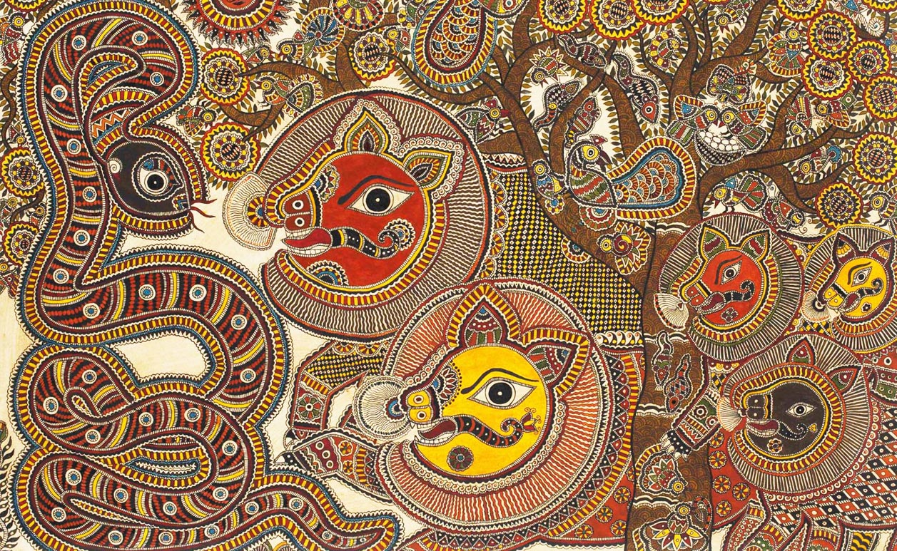
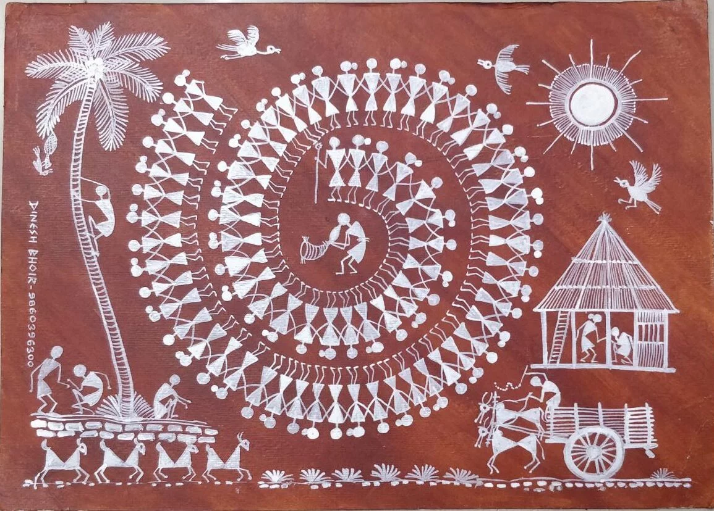
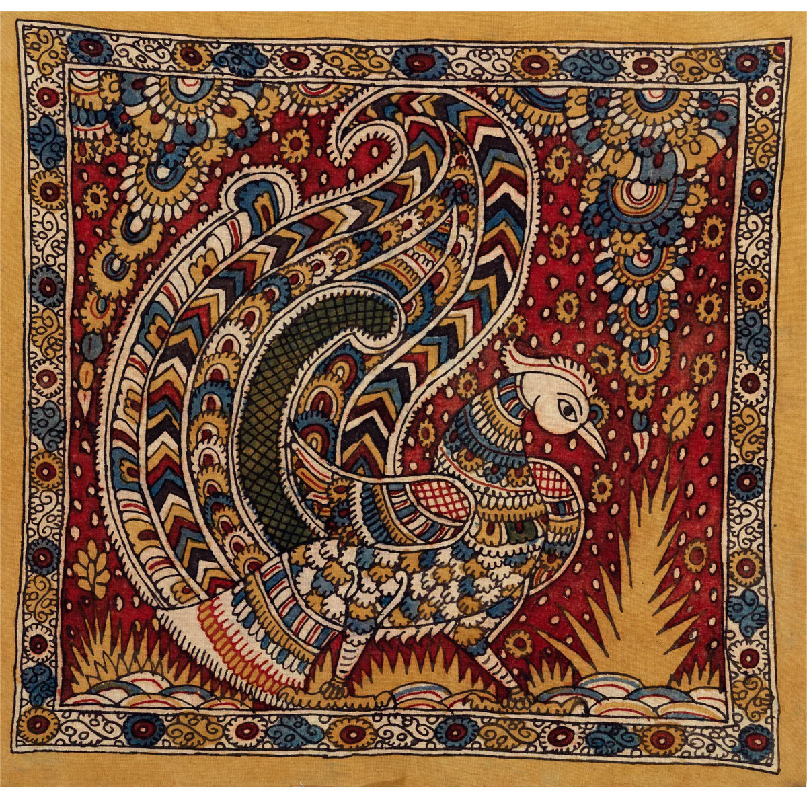

India is one of the very few countries in the world where street art is not merely imported from Western hip hop culture but has grown organically from thousands of years of its own public art tradition. Long before spray cans arrived in India, Indian communities were painting their walls.
From the ritualistic Madhubani paintings of Bihar to the tribal Warli art of Maharashtra, from the narrative Kalamkari cloth paintings of Andhra Pradesh to the Gond art of Madhya Pradesh — India's folk art traditions are the true ancestors of its contemporary street art scene.
Today's Indian street artists consciously and deliberately draw from these traditions. You can see Madhubani line patterns in Delhi murals, Warli geometric figures adapted into large scale graffiti, and Kalamkari narrative storytelling influencing how muralists approach large walls. This fusion of ancient folk wisdom and contemporary urban expression is precisely what makes Indian street art unique in the entire world.

Bihar, Eastern India — practiced continuously for over 2,500 years
Traditionally painted by women on the walls and floors of homes during weddings and Chhath Puja. The act of painting was sacred — a form of prayer and consecration.
Intricate geometric patterns, bold black outlines, and no empty space — every surface filled with dots, lines, and florals. Natural pigments like turmeric, indigo, cow dung, and lamp black were used.
Rama, Sita, Krishna, Durga, fish, birds, lotus flowers, sun, moon, weddings, festivals.
Delhi murals incorporate Madhubani linework and dense pattern-filling into graffiti typography — creating a dialogue between ancient Bihar and modern urban expression.

Palghar District, Maharashtra — practiced for thousands of years
Painted by Warli women during harvests and weddings. Ritual objects representing worship and community bonding.
Minimal geometric vocabulary — circles (sun/moon), triangles (mountains/trees), squares (sacred spaces). White rice paste on dark mud walls.
Farming, hunting, Tarpa dance, seasons, animals, agricultural cycles.
Mumbai artists use Warli geometry for large urban murals — depicting rickshaws, traffic, and city life in a thousand-year-old tribal language.

Andhra Pradesh and Telangana — practiced for over 3,000 years
Painted cloth panels used in temples and by travelling storytellers to narrate the Ramayana and Mahabharata visually.
Flowing narrative compositions with multiple scenes across a single surface. Earthy reds, indigo blues, deep blacks — ornate yet grounded.
Ramayana, Mahabharata, Vishnu, Shiva, Puranic legends in sequential storytelling.
South Indian muralists use Kalamkari’s storytelling logic — one wall, one unfolding narrative. Its earthy palette dominates Hyderabad and Chennai murals.